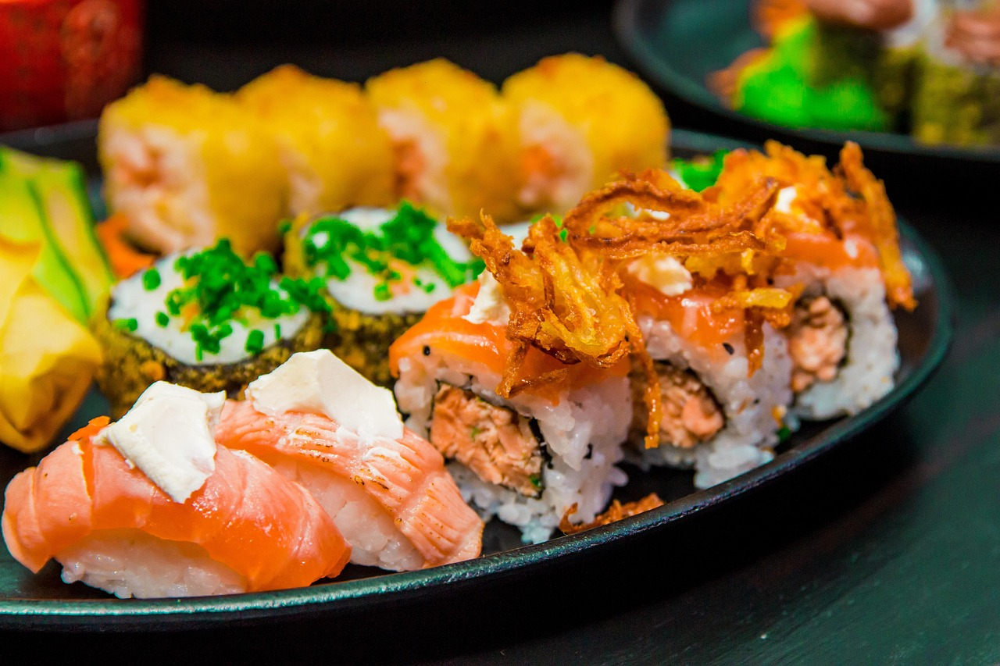

Katsu don
Bol de arroz con cerdo empanado, cebolla y huevo semicuajado.
Selección de preparaciones japonesas con técnicas distintas. Cada ficha enlaza a una página de detalle con texto, galería y video.
Bol de arroz con cerdo empanado, cebolla y huevo semicuajado.

Arroz avinagrado con pescado y vegetales en formato nigiri y maki.

Caldo aromático, fideo elástico y toppings para servicio en caliente.

Masa fina rellena de carne y verduras, sellada a la plancha.